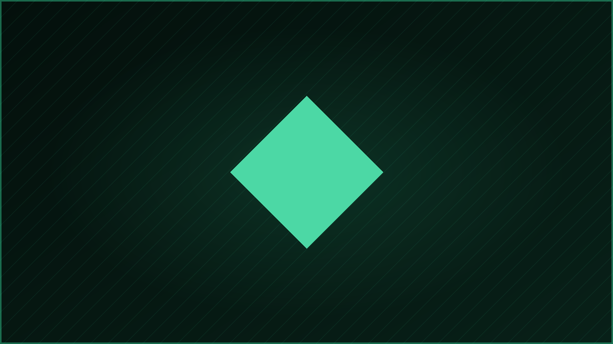
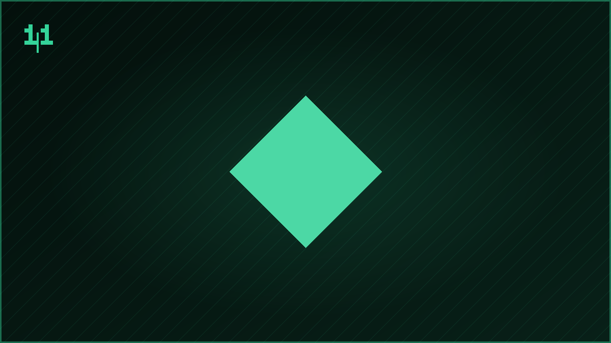

Asset
Oni Game
Asset de ambiente samurai para um jogo de arcade com misticismo oni.

📐 Características
🖼️ Galeria do Trabalho
Registros visuais do processo e do resultado final.
Asset de ambiente samurai para um jogo de arcade com misticismo oni.

